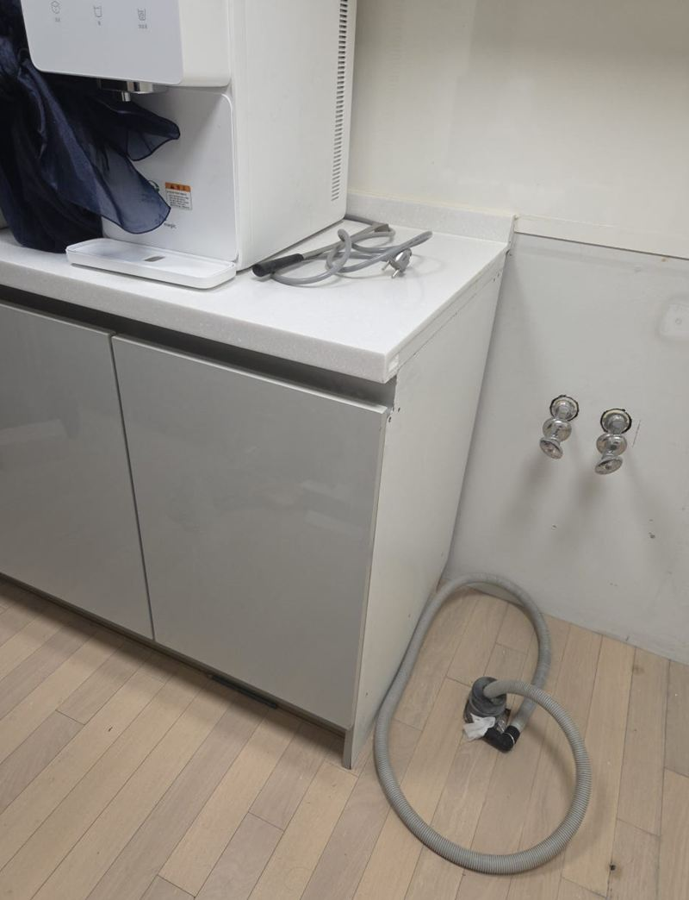
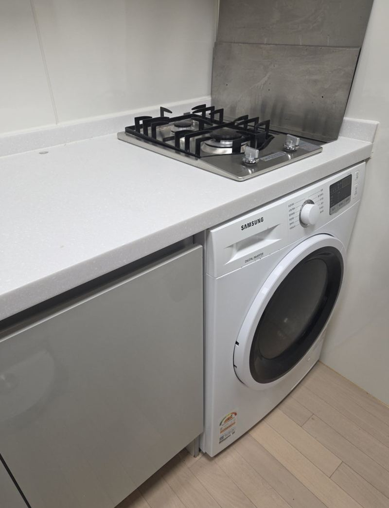
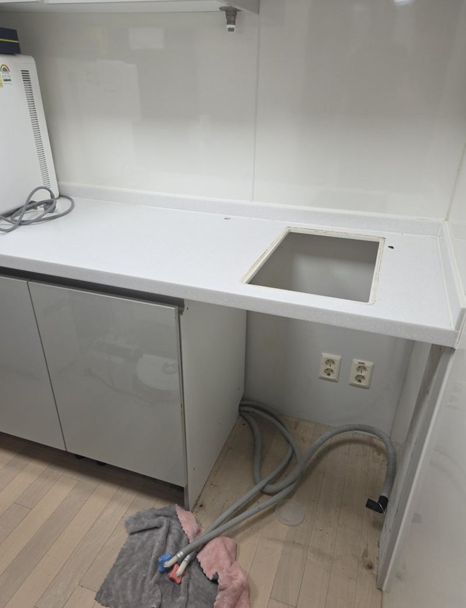
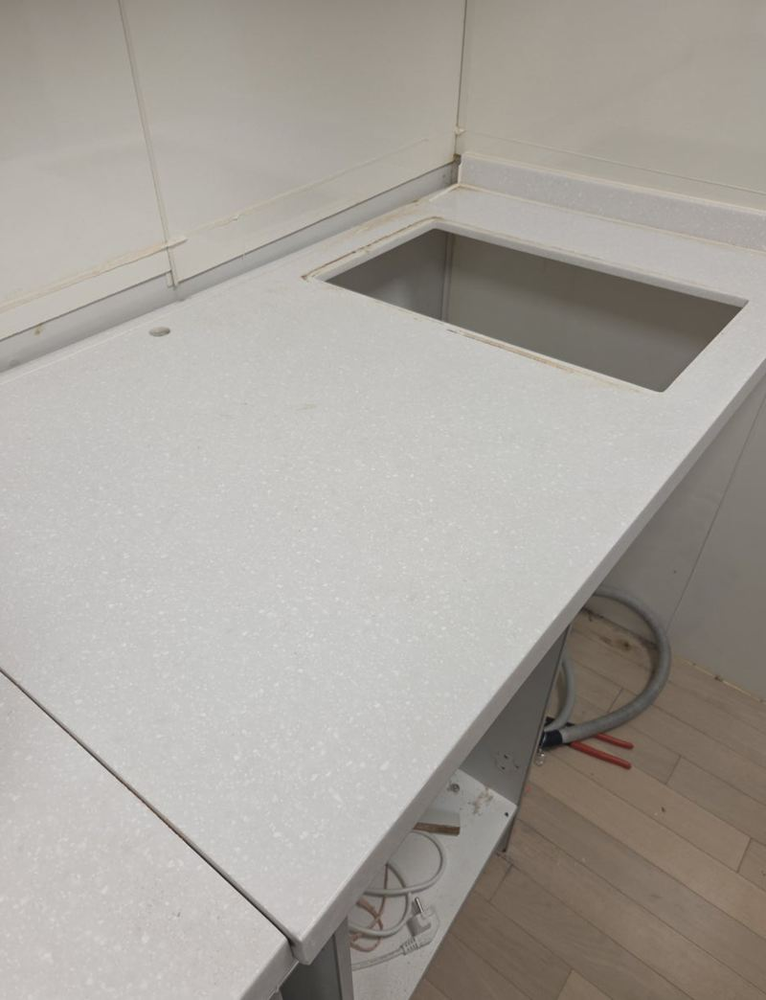
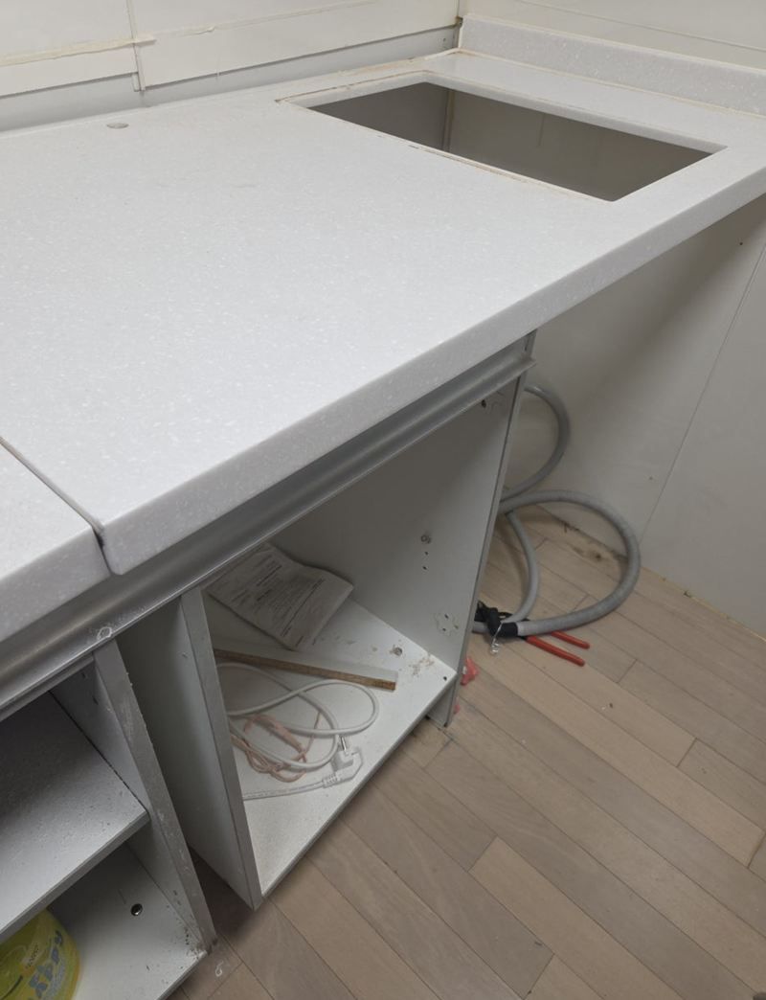
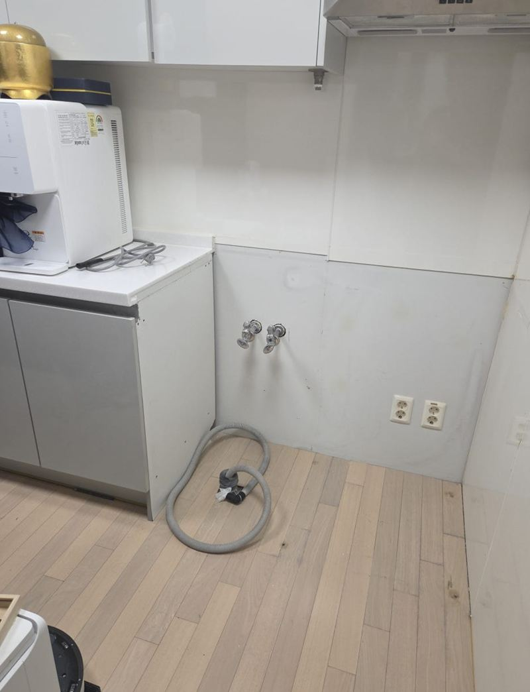

종로 싱크대장 리폼, 대리석 절단 작업 과정
← 밀어서 전후 비교 →
"새 세탁기를 샀는데 커서 원래 자리에 안 들어가요. 주방을 다 바꾸지 않고 공간만 넓힐 수 있을까요?" 종로 사직동 아파트였어요. 싱크대 아래 빌트인 세탁기 칸은 처음 지을 때 크기에 맞춰져 있어, 요즘 대형 세탁기는 폭이 모자랐어요. 상판과 하부장이 맞물린 구조라 일부만 떼는 것으로는 해결이 안 됐어요. 세탁기와 가스레인지를 먼저 분리하고, 하부장과 대리석 상판을 새 폭에 맞춰 잘라 낸 뒤 절단면을 다듬고 옆판과 걸레받이로 마감했어요.
| 현장 | 서울 종로구 사직동 아파트 주방 |
|---|---|
| 요청 | 주방 전체 교체 없이 세탁기 자리만 넓히기, 자연스러운 마감 |
| 한 일 | 세탁기 분리 → 가스 밸브 잠그고 가스레인지 분리 → 하부장 절단 → 대리석 상판 컷팅 → 절단면 샌딩·모서리 R가공 → 새 측판·걸레받이 마감 |
| 결과 | 세탁기 자리 확장, 기존 주방과 이어지는 마감 |
주방을 다 바꾸지 않아도 돼요
요즘 세탁기는 몇 년 전보다 훨씬 커졌어요. 그래서 빌트인 칸에 새 세탁기가 안 들어가는 집이 많아요. 주방 전체를 새로 짜면 깔끔하지만 비용과 공사 기간이 커요. 필요한 칸만 넓히는 부분 리폼을 고르는 분이 늘고 있는 이유예요.
다만 세탁기 칸 위는 대리석 상판이 덮고 있고, 옆 하부장과 연결돼 있어요. 아무 데나 자르면 상판이 흔들리거나 옆 장이 처져요. 그래서 하중을 받쳐야 하는 부분은 남기고, 잘라도 되는 범위를 계산하며 진행했어요.


하부장·상판 자르는 순서
세탁기 분리
급수·배수 호스를 무리하게 당기면 연결부가 상해요. 순서대로 풀어 세탁기를 뺐어요.
가스레인지 분리
상판을 잘라야 해서 가스레인지도 들어냈어요. 가스 밸브를 먼저 잠그고 연결 상태를 확인하며 안전하게 분리했어요.
하부장 절단
요청하신 폭에 맞춰 자를 선을 표시하고, 안쪽 지지 구조를 보며 하부장을 잘랐어요.


대리석 상판 컷팅
일반 공구로 자르면 절단면이 깨지고 거칠어요. 전용 장비로 상판을 잘라 냈어요.

자른 자리 마감하기
막 자른 대리석 단면은 날카롭고 거칠어요. 손이 닿는 자리라 샌딩으로 매끄럽게 다듬고, 모서리는 둥글게 R가공해 베이지 않게 했어요. 잘린 하부장 옆면은 안쪽 구조가 드러나서 새 측판을 대 막고, 걸레받이도 새 폭에 맞춰 다시 잘라 이었어요.

마치고 보니 세탁기 자리가 넓어졌고, 겉모습도 원래 주방과 크게 다르지 않게 이어졌어요. 고객분은 "생각보다 훨씬 자연스럽게 바뀌었다"며 만족하셨어요.
리폼 전에 재 두면 좋은 것
- 새 세탁기 치수폭·깊이·높이와 문 여는 방향을 알려주세요.
- 배관 위치급수 밸브와 배수구가 넓힌 자리에서도 닿는지 봐요.
- 위쪽 가전가스레인지나 인덕션이 바로 위에 있으면 함께 떼야 해요.
가전 바꾸기 전에 자리부터 재세요
세탁기, 식기세척기, 냉장고는 해마다 커지고 있어요. 새 제품을 주문하기 전에 들어갈 자리의 폭·깊이·높이를 먼저 재 보시면, 배송 날 안 들어가 당황하는 일을 막을 수 있어요. 문이 열리는 방향과 호스 길이까지 보면 더 좋아요.
이미 샀는데 안 들어간다면 이번처럼 필요한 칸만 넓히는 방법이 있어요. 주방 전체를 바꾸는 것보다 훨씬 짧고 부담이 적어요.
싱크대장 절단 리폼 질문
건조기를 함께 넣을 수 있나요?
폭과 높이가 되면 가능해요. 위로 쌓는 경우 상판 위치도 함께 봐요.
자른 상판 조각은 어떻게 하나요?
필요 없으면 가져가 처리하고, 다른 곳 보수에 쓸 수 있으면 남겨 드려요.
먼지가 많이 나나요?
대리석을 자를 때 가루가 날려 주변을 덮고 작업한 뒤 청소해요.
가스레인지는 다시 달아 주나요?
상판 작업이 끝나면 다시 앉히고 가스 연결과 점화를 확인해요.
식기세척기 자리도 넓힐 수 있나요?
같은 방법으로 하부장과 상판을 맞춰 넓힐 수 있어요.
오래된 주방도 되나요?
하부장 몸통이 튼튼하면 가능해요. 물에 불은 판재는 함께 바꿔요.
다른 상판 현장
세탁기 칸 정면과 새 세탁기 치수를 알려주세요.
전화 상담 010-4517-9872